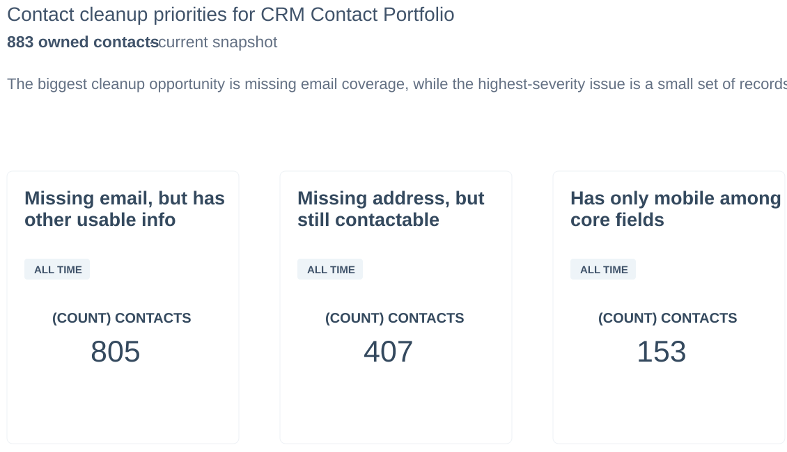
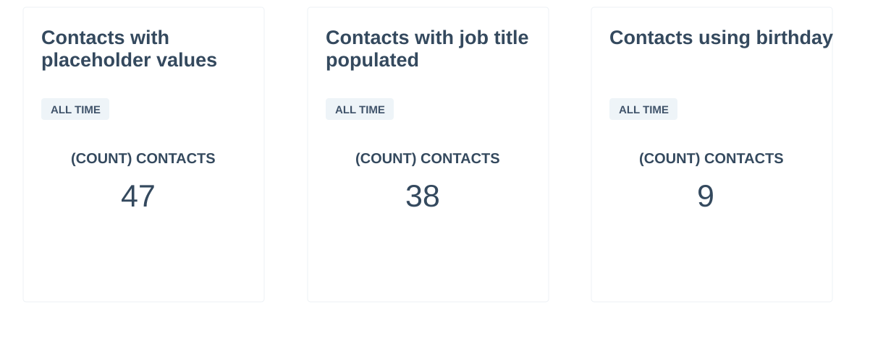
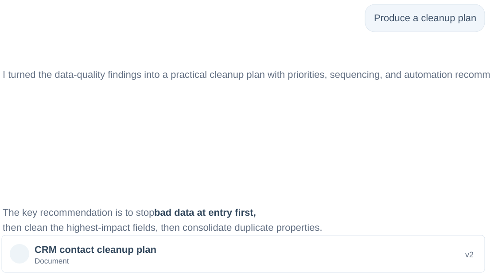

Understand the Need
Clarify goals, timeline, blockers, stakeholders, and what a good outcome looks like for the customer.
A combined view of how I support customers, document follow-up, improve workflows, and use CRM governance to make operations cleaner, more reliable, and easier to manage.
Good customer operations means the work is not dependent on memory. It is documented, visible, follow-up ready, and easy for the next person to understand.
Clarify goals, timeline, blockers, stakeholders, and what a good outcome looks like for the customer.
Keep CRM notes, tasks, meeting history, complaint context, and next steps clean so the account is never floating loose.
Coordinate with internal teams and vendors, confirm resolution, and make sure the customer knows what changed.
This case study shows the same operations habits applied to a real CRM problem: identify the risk, audit the records, separate assumptions from root cause, and build a practical remediation plan.
Missing customer information, placeholder values, duplicate fields, and inconsistent field usage created contactability risk and reporting reliability concerns.
Audited 883 records and translated missing phone, email, and address fields into operational risk categories.
Prevent bad data at entry, standardize field rules, and consolidate duplicate properties into a clear source of truth.

The audit found no records older than 12 months by last modified date, so the issue was not stale ownership. The real gap was field design, source-of-truth guidance, and consistent data-entry rules.
Missing email, phone, and address fields could weaken follow-up reliability and make outreach dependent on individual memory.
Duplicate fields and inconsistent property use made it harder to trust dashboards, segmentation, and workflow triggers.
Placeholder values and unclear field expectations allowed bad data to keep entering the CRM instead of being stopped at intake.

Define required fields, owner expectations, placeholder rules, and intake checks. Prioritize records with no usable contact path first.
Resolve missing email and address coverage, normalize key values, and build recurring review lists for record owners.
Document the source of truth, retire duplicate properties, add validation or workflow prompts, and turn governance into a monthly operating rhythm.

Cleaner contact fields reduce missed outreach risk and make lifecycle management less dependent on memory.
Standardized fields and source-of-truth rules improve dashboards, segmentation, and leadership reporting.
A governance plan turns cleanup into an operating rhythm through training, validation, and recurring review.